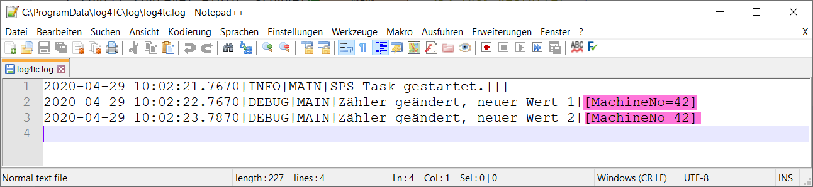

Integration von Context-Eigenschaften
Für log4TC sind Log-Meldungen mehr als simple Strings, die in Textdateien geschrieben werden. Jede Log-Meldung besteht aus einer variablen Anzahl von zwingend und optionalen Eigenschaften. Context-Properties sind solche optionale Eigenschaften.
Context-Eigenschaften sind ein weiterführendes Thema und können beim ersten Kontakt mit log4TC übersprungen werden. Um aber vom Logging-System die maximalen Nutzen ziehen zu können, lohnt sich aber die Einarbeitung.
Zweck der Context-Eigenschaften
Die Context-Eigenschaften einer Log-Meldungen ermöglichen es direkt und indirekt zusätzliche Daten einer Log-Message mitzugeben, zu verarbeiten, zu filtern und auszugeben. Der Context ist sehr ähnlich zu Argumenten einer Meldung, mit dem Unterschied, dass sie nicht direkt in der Log-Meldung erscheinen müssen.
Der Context existiert auf vier Ebenen:
- Task
- Verschachtelter Context (Nested Context)
- (Logger) - momentan noch nicht implementiert
- Log-Message
In dieser Einführung wird nur der letzte Typ beschrieben.
Context-Properties für Log-Messages
Um einer Log-Message einen Context mitzugeben, muss hierfür eine neue Variante der F_Log* Funktion verwendet werden:
F_LogLA1C(
E_LogLevel.eDebug,
sLogger,
'Zähler geändert, neuer Wert {0}',
nCounter,
F_LogContext().AddInt('MachineNo', 42)
);
In diesen Beispiel wird an die von den vorherigen Schritten bereits vorhandene Log-Meldung eine Context-Eigenschaft mit dem Namen MachineNo und den Wert 42 hinzugefügt.
Der komplette Code sieht wie folgt aus:
PROGRAM MAIN
VAR CONSTANT
sLogger : STRING := 'MAIN';
END_VAR
VAR
nCounter : UINT;
fbCountTime : TON := (PT:=T#1S);
END_VAR
--------------------------------------------------------------
IF _TaskInfo[GETCURTASKINDEXEX()].FirstCycle THEN
F_LogL(E_LogLevel.eInfo, sLogger, 'SPS Task gestartet.');
END_IF
fbCountTime(IN:=NOT fbCountTime.Q);
IF fbCountTime.Q THEN
nCounter := nCounter + 1;
F_LogLA1C(
E_LogLevel.eDebug,
sLogger,
'Zähler geändert, neuer Wert {0}',
nCounter,
F_LogContext().AddInt('MachineNo', 42)
);
END_IF
PRG_TaskLog.Call();
Der Code befindet sich im Beispielprojekt unter den Namen "D_LogWithContext".
Log-Message
In der mitgelieferten Konfigurationsdatei werden die Context-Eigenschaften am Ende der Log-Meldung hinzugefügt:
